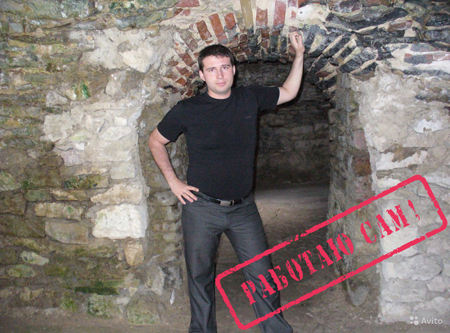
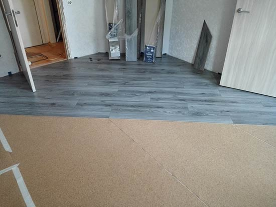
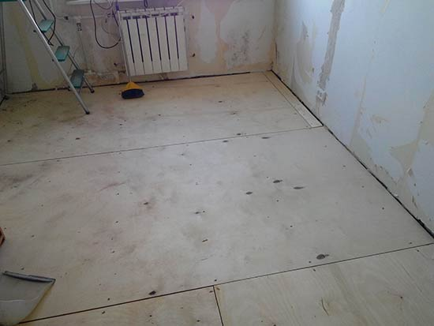

- Укладка ламината и паркетной доски
- Установка межкомнатных дверей
- Укладка плитки, поклейка обоев
Укладка ламината в Санкт-ПетербургеОкончательным этапом ремонта квартиры является укладка ламината. Для этой деятельности важно отыскать опытного частного мастера или ответственную компанию по укладке пола. Выбор этот сложный и при неудачном решении у вас может оказаться, в результате недобросовестного исполнения, испорчено покрытие. А ремонт пола дело затратное, хлопотное и если уже расставлена в доме мебель, установлены межкомнатные двери, то, подчас, трудноосуществимое. Частный мастер по ремонту пола в квартирахМеня зовут Татаров Александр Владимирович. Я частный мастер по укладке ламината и паркетной доски в СПб. Специфика моей деятельности заключается в цикле работ от начала и до конца по финишной отделке пола, монтажу сухой стяжки Кнауф, устройству чернового пола на лагах с настилом фанеры. Работаю в Санкт-Петербурге и Лен. Области. По профессии я столяр-краснодеревщик, окончил училище в 1996 году в Санкт-Петербурге. После армии трудился в строительных бригадах, занимался внутренней отделкой помещений. Помогал устанавливать дверные блоки, окна, стелил шпунтованную доску. Штукатурили, укладывали плитку, шпатлевали финишными смесями, клеили обои, стелили напольное покрытие. Укладка ламината тогда производилась плавающим способом с проклейкой замков, безклеевого материала не было. Стоимость настила ламината в те времена была высокой, это связано с тем, что евроремонт квартир был дорогой сам по себе. Позже, при появлении замковых систем Click, цена на укладку ламината за м2 осталась неизменной. За период своей строительной деятельности выработал концепцию, что профессионально лучшего всего заниматься одним делом… Последние десять лет занимаюсь укладкой ламината, паркетной доски, кварцвиниловой плитки, установкой практически любых плинтусов и подготовкой пола к финишной отделке. Настил ламината на вид дело не сложное и, в целом, с монтажом справится большинство отделочников, но качество укладки будет не высоким. Могут быть сколы на швах из-за отсутствия специализированных иснтрументов- профессиональных добивочных брусков, зазоры по торцам в результате плохо выставленного первого ряда, сбитые замки по причине неправильной сборки изделия, впоследствии, скрип соединений и многое другое. Периодически поступают звонки о вздувшемся ламинате- это следствие отсутствия установки распорных клиньев между планками и стеной при настиле. Ламинат, паркетная доска, пробковый пол расширяется при увеличении влажности, а это происходит с окончанием отопительного сезона, и материал упирается в стену. В результате конструкция пола поднимается, выгибается, запоминает форму и становится невозможность дальнейшей нормальной эксплуатации, быстро портятся замки и приходят в негодность. При ремонте квартир от фирм или универсальных специалистов обычно так и происходит. А дело в том, что ремонтники широкого профиля делают ремонт квартиры один-два месяца и, соответственно, производят укладку в течение этого периода времени. То есть, у них опыт настила пола один раз в два месяца. Нечасто встречаются исполнители со знанием всех тонкостей этапов отделочных работ. При оформлении укладки через фирму вам могут прислать неопытных специалистов, которые только начали осваивать свою профессию. Что и говорить, на качестве и сроках в положительную сторону, это явно не сказывается. Не говоря уже о том, что для содержания штата посредниками рабочих, последним постоянно нужно давать заказы, иначе они разбегутся. Идут большие расходы на рекламу: оклад диспетчеру, замерщику, свою зарплату. А значит, умельцам по укладке пола платят меньше и, как следствие, делают они свою работу хуже. По поводу гарантий: как правило, когда обнаруживается некачественно сделанный труд, тот человек от фирмы, который осуществлял укладку пола, давно уехал. А ехать исправлять чужие недочеты никто не захочет и начинается волокита. Частных мастеров нужно тоже выбирать тщательно. Сейчас очень много разнообразных сайтов для реализации через площадки всевозможных услуг, в том числе и отделочных по ремонту квартир. Таких сервисов великое множество и самые известные из них: Авито, Профи Ру и многие другие. Не буду описывать всю систему этих площадок, между собой они отличаются, но суть остается такая: там большое разнообразие различных соискателей и бригадиров. В результате, на адрес к заказчику выезжает совершенно не тот исполнитель, которого вы приглашали. Это объясняется элементарно, в этих сервисах находятся посредники, которые и высылают ремонтников, часто непроверенных. Должен сказать, что везде находятся умелые специалисты, но, чтобы их найти, нужно запастись терпением, удачей для поиска или следовать рекомендациям хорошо знакомых вам людей. Укладка ламината с промышленным пылесосом, рекомендации к настилуОснование для укладки ламината должно быть ровным, по ГОСТу допускается перепад 5мм на 2 метра, хотя на практике часто бывают и большие неровности; по своему опыту скажу, что производить укладку на такое основание допускается и часто так делается (не все могут себе позволить капитальный ремонт и связанные с этим неудобства), но при сборке могут появиться микрозазоры по торцам и, как следствие, вероятно меньший срок службы эксплуатации уложенной конструкции. Иногда поставляется ламинированный пол, в том числе довольно дорогой, с нарушением геометрии из-за неправильного хранения или плохо настроенного производственного оборудования. …Очень часто незамеченными остаются неровности в районе труб (бетонные наплывы - их необходимо устранить или минимизировать) и в переходах между помещениями - они могут быть незначительными, но влияющими на эксплуатацию изделия в ключевых местах. Укладка ламината желательна на подготовленное, обеспыленное и прогрунтованное помещение с отсутствием мебели. Если с этой задачей справиться у вас нет времени или возможности, эту работу можем сделать мы с компаньоном. Укладка ламината на фанеруУкладка ламината на бетонное основаниеПоявилась возможность укладки ламината с промышленным пылесосом. Преимущества такого настила- возможность качественного обеспыливания поверхности в углах, швах соединения стяжки, и возможность распиловки материала с подключенным к пылесосу электролобзиком. А это значит значительное отсутствие летающей и оседающей пыльной фракции на обоях, потолке. Хотя при работе лобзиком пыли не очень много. При монтаже первого ряда плашек требуется выдержать все необходимые зазоры от стен, а если они неровные, произвести распиловку планки ламината так, чтобы шов по всей длине между стеной и ламинатом был около 10 мм, в зависимости от размера помещения и толщины плинтуса, который должен перекрыть этот компенсирующий зазор. По моим наблюдениям, это расстояние должно составлять 1мм на один погонный метр. Нужно иметь качественный инструмент, чтобы предотвратить сколы при распиловке материала и его сборке, так как кромку легко можно повредить при монтаже второго и последующих рядов планок укладываемого пола. Расстояние по торцам плашек между рядами должно составлять не менее 30-40 см, если в целях экономии где-то допустить меньшую длину, то ничего страшного не случится. Монтаж последнего ряда производится специальной стальной скобой. Если вас заинтересовала укладка ламината в СПб или области и вы приняли решение - звоните, с удовольствием все расскажу. |